<title>Klepon Rev 1 Design</title>
<link rel="stylesheet" href="https://fonts.googleapis.com/css2?family=Space+Grotesk:wght@500;600;700&family=IBM+Plex+Sans:wght@400;500;600&family=IBM+Plex+Mono:wght@400;500&display=swap">
<style>
/* Layout: a single reading column with a sticky section index; diagrams break out to full column width.
   Palette from the board itself: solder-mask green ink, copper highlight, silkscreen-white paper. */
:root{
  --bg:#f4f6f3; --paper:#ffffff; --fg:#17201b; --muted:#56635b; --line:#d5ddd6;
  --mask:#1d6a46; --mask-soft:#e3efe7; --copper:#b4692c; --copper-soft:#f6e9dc;
  --ok:#2c7a4b; --warn:#a86a12; --todo:#6a6f8a; --crit:#b23a2e;
  --sheet:#ffffff;
  --f-display:"Space Grotesk",ui-sans-serif,system-ui,sans-serif;
  --f-body:"IBM Plex Sans",ui-sans-serif,system-ui,sans-serif;
  --f-mono:"IBM Plex Mono",ui-monospace,SFMono-Regular,Menlo,monospace;
}
@media (prefers-color-scheme: dark){:root:not([data-theme="light"]){
  --bg:#101614; --paper:#17201c; --fg:#e4ebe6; --muted:#9aa89f; --line:#2b3732;
  --mask:#5fc08c; --mask-soft:#1c3328; --copper:#e09a5c; --copper-soft:#3a2a1c;
  --ok:#6cc690; --warn:#e3a94b; --todo:#a3a8c6; --crit:#ef7b6e; --sheet:#f7f7f2; color-scheme:dark}}
:root[data-theme="dark"]{
  --bg:#101614; --paper:#17201c; --fg:#e4ebe6; --muted:#9aa89f; --line:#2b3732;
  --mask:#5fc08c; --mask-soft:#1c3328; --copper:#e09a5c; --copper-soft:#3a2a1c;
  --ok:#6cc690; --warn:#e3a94b; --todo:#a3a8c6; --crit:#ef7b6e; --sheet:#f7f7f2; color-scheme:dark}
body{background:var(--bg);color:var(--fg);font-family:var(--f-body);font-size:15.5px;line-height:1.6}
.wrap{max-width:1080px;margin:0 auto;padding-left:max(16px,env(safe-area-inset-left,0px));padding-right:max(16px,env(safe-area-inset-right,0px));padding-block:0 4rem}
header.top{border-bottom:1px solid var(--line);background:var(--paper)}
header.top .wrap{padding-block:2.2rem 1.6rem;display:grid;gap:.6rem}
.eyebrow{font-family:var(--f-mono);font-size:.78rem;letter-spacing:.08em;text-transform:uppercase;color:var(--copper)}
h1{font-family:var(--f-display);font-size:clamp(2rem,5vw,3rem);line-height:1.05;margin:0;letter-spacing:-.02em}
h2{font-family:var(--f-display);font-size:1.6rem;margin:0;letter-spacing:-.01em;text-wrap:balance}
h3{font-family:var(--f-display);font-size:1.1rem;margin:0}
p{margin:0;max-width:68ch}
.lede{color:var(--muted);font-size:1.05rem;max-width:72ch}
.meta{display:flex;flex-wrap:wrap;gap:.5rem 1.4rem;font-family:var(--f-mono);font-size:.8rem;color:var(--muted)}
nav.toc{position:sticky;top:env(safe-area-inset-top,0px);z-index:5;background:var(--bg);border-bottom:1px solid var(--line)}
body::before{content:"";position:fixed;inset:0 0 auto;height:env(safe-area-inset-top,0px);z-index:10;background:var(--bg)}
nav.toc .wrap{padding-block:.55rem;display:flex;gap:.3rem 1.1rem;flex-wrap:wrap;font-size:.85rem}
nav.toc a{color:var(--muted);text-decoration:none}
nav.toc a:hover,nav.toc a:focus-visible{color:var(--mask);text-decoration:underline}
section{display:grid;gap:1.1rem;padding-top:3rem}
.sec-head{display:grid;gap:.35rem}
.num{font-family:var(--f-mono);font-size:.8rem;color:var(--copper)}
.panel{background:var(--paper);border:1px solid var(--line);border-radius:6px;padding:1.2rem;min-width:0}
.grid2{display:grid;grid-template-columns:repeat(auto-fit,minmax(min(100%,320px),1fr));gap:1rem}
.grid3{display:grid;grid-template-columns:repeat(auto-fit,minmax(min(100%,230px),1fr));gap:.8rem}
.scroll{overflow-x:auto}
table{border-collapse:collapse;width:100%;font-size:.9rem}
th,td{text-align:left;padding:.45rem .6rem;border-bottom:1px solid var(--line);vertical-align:top}
th{font-family:var(--f-mono);font-size:.74rem;letter-spacing:.06em;text-transform:uppercase;color:var(--muted);font-weight:500}
td.n,th.n{text-align:right;font-variant-numeric:tabular-nums}
code,.mono{font-family:var(--f-mono);font-size:.86em}
.pill{display:inline-block;font-family:var(--f-mono);font-size:.72rem;padding:.1rem .5rem;border-radius:99px;border:1px solid currentColor;white-space:nowrap}
.pill.ok{color:var(--ok)}.pill.warn{color:var(--warn)}.pill.todo{color:var(--todo)}.pill.crit{color:var(--crit)}
.sheetcard{display:grid;gap:.35rem;background:var(--paper);border:1px solid var(--line);border-radius:6px;padding:.9rem}
.sheetcard .row{display:flex;justify-content:space-between;align-items:center;gap:.6rem}
.sheetcard p{font-size:.86rem;color:var(--muted)}
.paperframe{background:var(--sheet);border-radius:6px;border:1px solid var(--line);padding:.5rem;overflow-x:auto}
.paperframe img{display:block;width:100%;min-width:720px;max-width:none}
.caption{font-size:.85rem;color:var(--muted)}
.ba{display:grid;grid-template-columns:repeat(auto-fit,minmax(min(100%,420px),1fr));gap:1rem}
.ba figure{margin:0;display:grid;gap:.4rem;min-width:0}
.ba figcaption{font-family:var(--f-mono);font-size:.74rem;letter-spacing:.06em;text-transform:uppercase;color:var(--muted)}
.shot{position:relative;background:var(--sheet);border:1px solid var(--line);border-radius:6px;overflow:hidden}
.shot img{display:block;width:100%;height:auto}
.mark{position:absolute;border:2px solid var(--copper);border-radius:4px;box-shadow:0 0 0 2px color-mix(in srgb,var(--copper) 25%,transparent)}
.mark span{position:absolute;top:-2px;left:-2px;transform:translateY(-100%);background:var(--copper);color:var(--paper);font-family:var(--f-mono);font-size:.7rem;line-height:1;padding:.2rem .35rem;border-radius:3px 3px 0 0}
.mark.cut{border-style:dashed;border-color:var(--crit);box-shadow:none}.mark.cut span{background:var(--crit)}
ol.keys{margin:0;padding-left:1.3rem;display:grid;gap:.35rem}
ol.keys li::marker{font-family:var(--f-mono);color:var(--copper)}
.callout{border-left:3px solid var(--copper);background:var(--copper-soft);padding:.8rem 1rem;border-radius:0 6px 6px 0}
.callout p{max-width:none}
pre.mermaid{background:var(--paper);border:1px solid var(--line);border-radius:6px;padding:1rem;margin:0;overflow-x:auto;text-align:center}
svg text{font-family:var(--f-mono)}
ul.clean{margin:0;padding-left:1.1rem;display:grid;gap:.35rem}
a{color:var(--mask)}
:focus-visible{outline:2px solid var(--copper);outline-offset:2px}
@media (prefers-reduced-motion:reduce){*{scroll-behavior:auto!important}}
html{scroll-behavior:smooth}
</style>

<header class="top"><div class="wrap">
  <div class="eyebrow">Teapot Laboratories · Klepon · Rev 1 · schematic in progress</div>
  <h1>Klepon Rev 1 design</h1>
  <p class="lede">An off-grid mesh node: a Rockchip RV1106 running Linux joins Wi-Fi HaLow (sub-GHz) and 2.4 GHz links into one mesh with batman-adv, and a GPS gives it position and time. It runs on 18650 cells charged by a handheld solar panel and plugs into a laptop over USB-C.</p>
  <div class="meta"><span>Status as of 2026-11-21</span><span>KiCad 10.0.8</span><span>All 12 sheets drawn, ERC clean</span><span>PCB 475/499 routed</span><span>Report v23</span><span>Parts: LCSC first</span></div>
</div></header>

<nav class="toc" aria-label="Sections"><div class="wrap">
  <a href="#architecture">Architecture</a><a href="#power">Power tree</a><a href="#sequence">Power-up order</a><a href="#budget">Power budget</a><a href="#connections">RV1106 connections</a><a href="#sheets">Sheets</a><a href="#redraw">Redraw</a><a href="#charger">USB and Charger</a><a href="#powersheets">Power sheets</a><a href="#holdoff">Hold-off</a><a href="#placement">PCB</a><a href="#bom">Cost so far</a><a href="#open">Open questions</a>
</div></nav>

<main class="wrap">

<section id="architecture">
  <div class="sec-head"><span class="num">1 · Architecture</span><h2>Two radios, one mesh, plus GPS</h2>
  <p>Each radio is a link underneath batman-adv. batman-adv picks the best link for every hop by measured throughput, so nearby nodes use the 2.4 GHz link and distant ones fall back to HaLow. The GPS gives each node its position and accurate time without internet. The laptop sees one Ethernet interface over USB-C.</p></div>
<pre class="mermaid">
flowchart LR
  laptop["Laptop<br/>USB-C"] -- "CDC-NCM / RNDIS" --> usb0
  subgraph SoC["RV1106G3 · Linux"]
    usb0["usb0"] --- br0(("br0"))
    br0 --- bat0["bat0<br/>batman-adv BATMAN_V"]
    bat0 --- mesh0["mesh0<br/>802.11s"]
    bat0 --- mesh24["mesh24<br/>Ethernet over SPI"]
    gpsd["gpsd + chrony<br/>position, time"]
  end
  mesh0 -- "SDIO" --> halow["Heltec HT-HC01 V2<br/>MM6108 · 902–928 MHz · 27 dBm"]
  mesh24 -- "SPI" --> c5["ESP32-C5-WROOM-1U<br/>ESP-NOW · 2.4 GHz"]
  gpsd -- "UART + 1PPS" --> gps["ATGM336H GPS<br/>external active antenna"]
</pre>
  <p class="caption">ESP-IDF has no 802.11s, so the C5 link uses ESP-NOW, on 2.4 GHz (owner, Q-10). The original ESP32 and its experimental FoA 802.11s link were dropped for the GPS on 2026-11-20.</p>
</section>

<section id="power">
  <div class="sec-head"><span class="num">2 · Power tree</span><h2>Solar or USB-C in, one 5 V bus out</h2>
  <p>The BQ25798 takes the panel and the USB port through its two input switches and charges the cells. A boost converter makes a 5 V bus, and small TLV62569 bucks make every rail from it. Each radio has its own buck, so firmware can switch any radio off with one enable pin.</p></div>
<pre class="mermaid">
flowchart LR
  usbc["USB-C VBUS<br/>5 V"] --> q12["Q1/Q2<br/>AO3400A pair"] --> bq
  pv["Handheld 6 V panel<br/>DC-005 jack, external"] --> d1["SS34<br/>reverse-polarity diode"] --> q34["Q3/Q4<br/>AO3400A pair"] --> bq
  bq["BQ25798<br/>buck-boost charger, MPPT"] -- "VSYS 3.0–4.2 V" --> hold["Hold-off switch<br/>on ≥ 3.6 V, off ≤ 3.3 V"] -- "VSYS_SW" --> boost["TPS61089<br/>5 V boost, 7 A switch"]
  bq <-- "VBAT" --> prot["DW01A + 2× FS8205A<br/>protection"] <--> cells["1S 18650 cells<br/>in parallel"]
  boost -- "VCC5V0_SYS" --> r09["TLV62569<br/>VDD_0V9 + VDD_ARM"]
  boost --> rddr["TLV62569<br/>VCC_DDR 1.35 V"]
  boost --> r18["TLV62569<br/>VCC_1V8"]
  boost --> r33["TLV62569<br/>VCC_3V3"]
  bq -- "VSYS" --> gpsldo["ME6211 LDO + EN<br/>GPS 3.3 V"]
  prot --> bkp["XC6206 LDO<br/>GPS backup 3.3 V"]
  boost --> rf2["TLV62569 + EN<br/>ESP32-C5 3.3 V"]
  boost --> rf3["TLV62569 + EN<br/>HaLow VBAT 3.3 V"]
  boost --> fem["P-FET switch<br/>HaLow VDD_FEM 5 V"]
</pre>
  <div class="callout"><p><strong>Firmware has to turn MPPT on.</strong> The BQ25798 powers up with <code>EN_MPPT = 0</code>, and MPPT can't be enabled while the battery is below VSYSMIN (datasheet §9.3.6.3). Firmware also has to keep the charge voltage at or below 4.2 V, under the DW01A's 4.25 V overcharge trip, and service the charger's watchdog.</p></div>
</section>

<section id="sequence">
  <div class="sec-head"><span class="num">3 · Power-up order</span><h2>RV1106 rails come up in three steps</h2>
  <p>Rockchip requires VDD_0V9 and VDD_ARM first, then VCC_1V8 and VCC_DDR, then VCC_3V3. Each step must be at least 1 ms after the last, and every soft-start longer than 100 µs (RV1106 Hardware Design Guide V1.1 §2.2.1). The Power sheet uses RC delays on the TLV62569 enable pins: EN high at 1.2 V max, 800 µs soft-start. The timing below is calculated from those values and still has to be measured on a board.</p></div>
  <div class="panel scroll">
  <svg viewBox="0 0 760 250" width="100%" style="min-width:600px" role="img" aria-label="Planned power-up timing: 0.9 V at about 1.1 ms, 1.8 V and DDR at about 3.5 ms, 3.3 V at about 6.3 ms, reset released about 10 ms later">
    <g font-size="11" fill="var(--muted)">
      <line x1="150" y1="210" x2="740" y2="210" stroke="var(--line)"/>
      <g id="ticks"></g>
    </g>
  </svg>
  </div>
  <p class="caption">Time from the 5 V bus reaching regulation. RC values on the Power sheet: 100 kΩ/10 nF for 0V9, 100 kΩ/100 nF for 1V8 and DDR, 200 kΩ/100 nF for 3V3 (t = RC·ln(5/3.8) to reach 1.2 V). The RV1106 holds reset for about 10 ms after VCC_3V3 internally (Rockchip reference p.5).</p>
</section>

<section id="budget">
  <div class="sec-head"><span class="num">4 · Power budget</span><h2>About 1.2 W with everything listening, so the node must duty-cycle</h2>
  <p>About 28.6 Wh a day from the battery with the SoC, HaLow, the C5 receiver and the GPS all on. A handheld 2–3.5 W panel collects about 5.4–9.5 Wh a day, enough to listen 19–33 % of the time (4.5–8 hours). Nodes have to share wake windows; the GPS gives every node the same clock to schedule them. Listening around the clock would need a panel of about 10.6 W. The SoC idle figure is an estimate (Rockchip only publishes a heavy camera case), so it has to be measured on the first board. Full sources: docs/power-budget.md (T19).</p></div>
  <div class="grid2">
    <div class="panel">
      <h3>Average draw from the battery, always listening</h3>
      <svg id="bars" viewBox="0 0 440 230" width="100%" role="img" aria-label="Average power by load"></svg>
    </div>
    <div class="panel scroll">
      <h3>Worst-case peaks</h3>
      <table>
        <thead><tr><th>Rail / load</th><th class="n">Peak</th><th>Source</th></tr></thead>
        <tbody>
          <tr><td>VDD_0V9 (heavy IPC, measured by Rockchip)</td><td class="n">1.085 A</td><td>Power report V1.2, peak sheet</td></tr>
          <tr><td>ESP32-C5 TX 2.4 GHz, 19 dBm</td><td class="n">313 mA</td><td>C5 module Table 6-4</td></tr>
          <tr><td>HaLow VDD_FEM, 27 dBm</td><td class="n">400 mA</td><td>HT-HC01 V2 Table 3.2.4.1</td></tr>
          <tr><td>GPS VCC peak</td><td class="n">100 mA</td><td>ATGM336H-5N manual p.11</td></tr>
          <tr><td><strong>5 V bus, worst case</strong></td><td class="n"><strong>1.07 A</strong></td><td>boost sized for 1.8 A</td></tr>
          <tr><td><strong>Battery side at 3.0 V</strong></td><td class="n"><strong>2.0 A</strong></td><td>BATFET 6 A RMS; DW01A trips at 4–9 A</td></tr>
        </tbody>
      </table>
    </div>
  </div>
</section>

<section id="connections">
  <div class="sec-head"><span class="num">5 · RV1106 connections</span><h2>SD card, HaLow, ESP32-C5 and GPS</h2>
  <p>The RV1106 has one SD/MMC controller, one SDIO controller and two SPI controllers. The SD card boots the system on SDMMC0. HaLow takes the only SDIO controller. The ESP32-C5 gets SPI1 plus two flow-control lines, a UART for console and flashing, and EN and BOOT lines so Linux can reflash it. The GPS needs only a UART, a 1PPS input and a power enable. The proposal reuses the pins freed by the ESP32; they are confirmed when the SoC sheet is drawn (T11).</p></div>
  <div class="panel scroll">
  <svg viewBox="0 0 900 470" width="100%" style="min-width:720px" role="img" aria-label="Connection diagram: RV1106 in the centre linked to the microSD card over SDMMC, the Heltec HaLow module over SDIO, the GPS over a UART with 1PPS, and the ESP32-C5 over SPI1">
    <defs><marker id="arr" viewBox="0 0 8 8" refX="7" refY="4" markerWidth="7" markerHeight="7" orient="auto-start-reverse"><path d="M0,0 L8,4 L0,8 z" fill="var(--muted)"/></marker></defs>
    <rect x="330" y="150" width="240" height="170" rx="8" fill="var(--mask-soft)" stroke="var(--mask)" stroke-width="2"/>
    <text x="450" y="185" text-anchor="middle" font-size="18" font-weight="600" fill="var(--fg)" style="font-family:var(--f-display)">RV1106G3</text>
    <text x="450" y="205" text-anchor="middle" font-size="11" fill="var(--muted)">QFN-128 · Linux · batman-adv</text>
    <g font-size="11" fill="var(--fg)">
      <text x="342" y="238">SDMMC0 · GPIO3_A</text><text x="558" y="238" text-anchor="end">SDIO_M0 · GPIO2_A</text>
      <text x="342" y="300">UART3_M1 · GPIO1_D</text><text x="558" y="300" text-anchor="end">SPI1_M0 · GPIO4_A</text>
      <text x="450" y="268" text-anchor="middle" fill="var(--muted)">UART2_M1 debug · I2C1_M0 charger</text>
    </g>
    <g>
      <rect x="20" y="30" width="230" height="110" rx="6" fill="var(--paper)" stroke="var(--line)"/>
      <text x="35" y="56" font-size="15" font-weight="600" fill="var(--fg)" style="font-family:var(--f-display)">microSD (boot)</text>
      <text x="35" y="78" font-size="11" fill="var(--muted)">CLK · CMD · DAT0–3 · DET</text>
      <text x="35" y="96" font-size="11" fill="var(--muted)">VCCIO4 = 3.3 V, SD 2.0 mode</text>
      <text x="35" y="114" font-size="11" fill="var(--muted)">22 Ω on CLK · DET low = card in</text>
      <rect x="650" y="30" width="230" height="110" rx="6" fill="var(--paper)" stroke="var(--line)"/>
      <text x="665" y="56" font-size="15" font-weight="600" fill="var(--fg)" style="font-family:var(--f-display)">Heltec HT-HC01 V2</text>
      <text x="665" y="78" font-size="11" fill="var(--muted)">SDIO CLK · CMD · D0–D3 (pull-ups)</text>
      <text x="665" y="96" font-size="11" fill="var(--muted)">RESET_N · WAKE · BUSY</text>
      <text x="665" y="114" font-size="11" fill="var(--muted)">PWR_EN · FEM_EN (5 V)</text>
      <rect x="20" y="330" width="230" height="120" rx="6" fill="var(--paper)" stroke="var(--line)"/>
      <text x="35" y="356" font-size="15" font-weight="600" fill="var(--fg)" style="font-family:var(--f-display)">ATGM336H GPS</text>
      <text x="35" y="378" font-size="11" fill="var(--muted)">TXD0 → UART3_RX · RXD0 ← UART3_TX</text>
      <text x="35" y="396" font-size="11" fill="var(--muted)">1PPS → GPIO (time sync)</text>
      <text x="35" y="414" font-size="11" fill="var(--muted)">GPS_PWR_EN → ME6211 CE</text>
      <text x="35" y="432" font-size="11" fill="var(--muted)">pins proposed, confirmed at T11</text>
      <rect x="650" y="330" width="230" height="120" rx="6" fill="var(--paper)" stroke="var(--line)"/>
      <text x="665" y="356" font-size="15" font-weight="600" fill="var(--fg)" style="font-family:var(--f-display)">ESP32-C5-WROOM-1U</text>
      <text x="665" y="378" font-size="11" fill="var(--muted)">SPI slave (GPIO matrix)</text>
      <text x="665" y="396" font-size="11" fill="var(--muted)">HANDSHAKE · DATA_READY</text>
      <text x="665" y="414" font-size="11" fill="var(--muted)">UART0 ← UART5_M1</text>
      <text x="665" y="432" font-size="11" fill="var(--muted)">EN · GPIO28 (BOOT) · PWR_EN</text>
    </g>
    <g stroke-width="2" fill="none">
      <path d="M250,85 C300,85 300,233 330,233" stroke="var(--copper)" marker-end="url(#arr)" marker-start="url(#arr)"/>
      <path d="M650,85 C600,85 600,233 570,233" stroke="var(--copper)" marker-end="url(#arr)" marker-start="url(#arr)"/>
      <path d="M250,390 C300,390 300,295 330,295" stroke="var(--mask)" marker-end="url(#arr)" marker-start="url(#arr)"/>
      <path d="M650,390 C600,390 600,295 570,295" stroke="var(--mask)" marker-end="url(#arr)" marker-start="url(#arr)"/>
    </g>
    <g font-size="11" fill="var(--fg)">
      <text x="262" y="150" text-anchor="start">4-bit SD 2.0</text>
      <text x="638" y="150" text-anchor="end">4-bit SDIO, up to 32.5 Mbps link</text>
      <text x="262" y="345">UART + 1PPS + EN</text>
      <text x="638" y="345" text-anchor="end">SPI + 2 flow-control</text>
    </g>
  </svg>
  </div>
  <div class="callout"><p><strong>Why HaLow uses SDIO_M0.</strong> SPI0 has only one pin option, GPIO1_C0–C3, and those are the SDIO_M1 pins. HaLow stays on SDIO_M0 (GPIO2_A, VCCIO5). With the ESP32 gone, SPI0 is now unused. SPI1 sits on the old eMMC data pins, which are free because the board has no on-board flash. The C5's EN and BOOT lines stay off the flash pins the boot ROM probes.</p></div>
  <div class="panel scroll"><table>
    <thead><tr><th>Group</th><th class="n">Pin</th><th>GPIO</th><th>RV1106 function</th><th>Net</th><th>Peer pin</th><th>Note</th></tr></thead>
    <tbody id="pinrows"></tbody>
  </table></div>
  <p class="caption">Draft, from Rockchip's RV1106G pin-out spreadsheet V1.1 and the module datasheets. It becomes final once the SoC sheet is drawn and ERC is clean. Debug console: UART2_M1 (pins 79/80). Charger I²C: I2C1_M0 (pins 64/65), interrupt on GPIO0_A2.</p>
</section>

<section id="sheets">
  <div class="sec-head"><span class="num">6 · Schematic sheets</span><h2>One A4 sheet per function</h2>
  <p>Set up like BWLC1A: hierarchical labels between sheets, power symbols for rails, an LCSC number on every part. Inside a sheet, parts connect with wires, not local net labels (owner, 2026-11-20).</p></div>
  <div class="grid3" id="sheetgrid"></div>
  <div class="paperframe">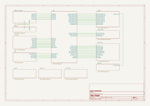</div>
  <p class="caption">Root sheet. The SoC sits in the middle, with straight wires to USB and Charger, microSD and GPS on the left and Radio Power on the right. Its HaLow and ESP32-C5 pins are connected when those sheets are drawn.</p>
</section>

<section id="redraw">
  <div class="sec-head"><span class="num">7 · Redraw</span><h2>From net labels to wires</h2>
  <p>The four drawn sheets were redrawn with wires, and no text overlaps another text, a wire or a symbol. Connectivity is unchanged: the whole-design netlist matches the label version net for net. The one intended exception is the USB data path through the ESD part, explained below. Two latent problems surfaced along the way and are fixed.</p></div>

  <h3>USB and Charger</h3>
  <div class="ba">
    <figure><figcaption>Before · local net labels</figcaption><div class="shot">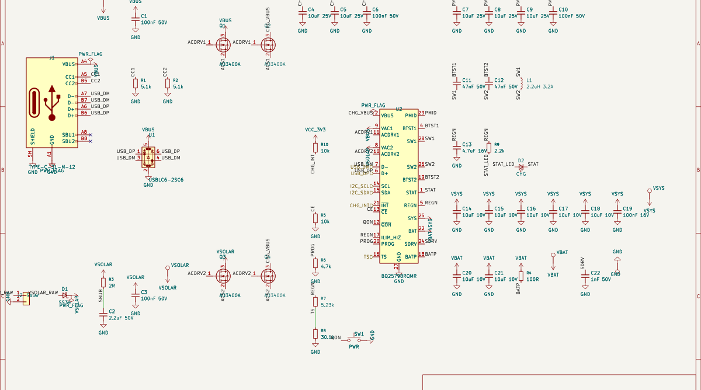</div></figure>
    <figure><figcaption>After · wired</figcaption><div class="shot">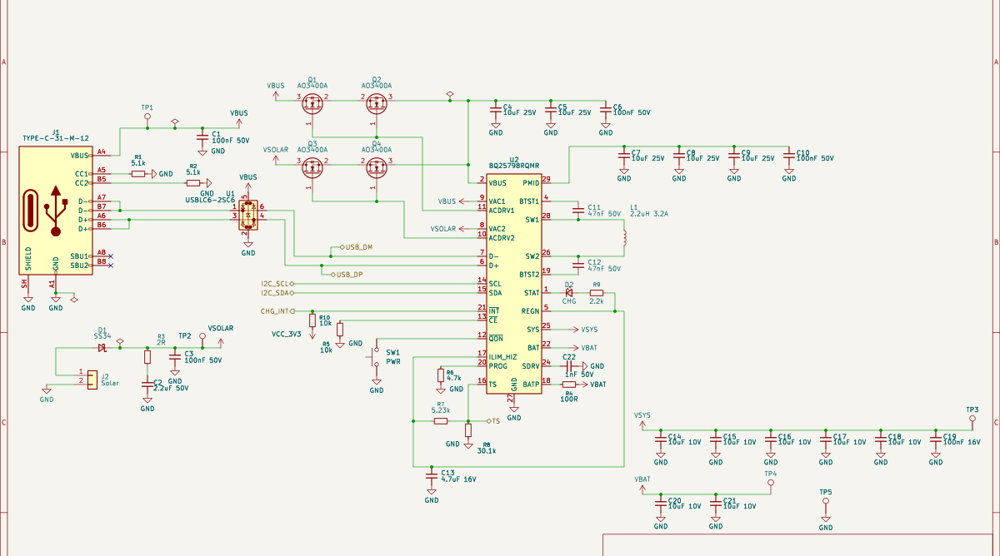
      <div class="mark" style="left:10.1%;top:20.1%;width:16.6%;height:39%"><span>1</span></div>
      <div class="mark" style="left:26.4%;top:13%;width:22.4%;height:30%"><span>2</span></div>
      <div class="mark" style="left:28.2%;top:49.4%;width:21.7%;height:40%"><span>3</span></div>
      <div class="mark" style="left:62.5%;top:13%;width:36%;height:84%"><span>4</span></div>
    </div></figure>
  </div>
  <ol class="keys">
    <li>VBUS runs above the CC resistors, so R1 and R2 each have room for their text. USBLC6 is drawn flow-through (see the diagram below).</li>
    <li>The USB and solar FET pairs sit in two rows far enough apart for their labels. The ACDRV lines run around them to the charger.</li>
    <li>Each control pin gets its own column, with upper pins further left, so no part sits across another pin's wire: R10 pull-up on ~INT, R5 on ~CE, the PWR button on ~QON, R6 on PROG and the TS divider. REGN loops under the chip to ILIM_HIZ, C13 and R7.</li>
    <li>Capacitor rows are at 15.24 mm pitch, each value beside its part and each GND text under its symbol.</li>
  </ol>

  <h3>Power: TPS61089 boost</h3>
  <div class="ba">
    <figure><figcaption>Before</figcaption><div class="shot">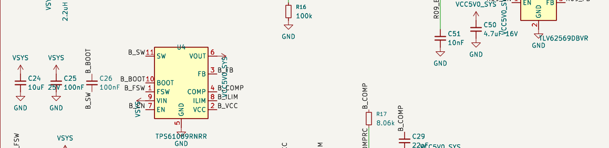</div></figure>
    <figure><figcaption>After</figcaption><div class="shot">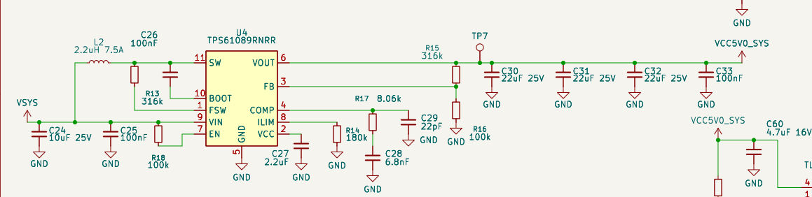
      <div class="mark" style="left:2.3%;top:52%;width:19%;height:42%"><span>5</span></div>
      <div class="mark" style="left:40%;top:40%;width:12%;height:42%"><span>6</span></div>
      <div class="mark" style="left:58.4%;top:10%;width:39%;height:55%"><span>7</span></div>
    </div></figure>
  </div>
  <ol class="keys" start="5">
    <li>The input caps C24 and C25 are spaced so their values don't run into each other.</li>
    <li>The R14 (ILIM) and R17 (COMP) labels sit next to their own parts.</li>
    <li>Output caps C30–C33 are at 15.24 mm pitch, with test point TP7 moved between the divider and C30.</li>
  </ol>

  <div class="grid2">
    <div class="panel"><h3>USBLC6: data lines pass through the part</h3>
      <svg viewBox="0 0 420 200" width="100%" role="img" aria-label="Flow-through diagram: USB D minus enters USBLC6 pin 1 and leaves on pin 6, joined inside the part; D plus enters pin 3 and leaves pin 4">
        <rect x="150" y="40" width="120" height="120" rx="6" fill="var(--copper-soft)" stroke="var(--copper)"/>
        <text x="210" y="32" text-anchor="middle" font-size="12" fill="var(--fg)">U1 USBLC6-2SC6</text>
        <line x1="20" y1="80" x2="150" y2="80" stroke="var(--mask)" stroke-width="2.5"/><line x1="270" y1="80" x2="400" y2="80" stroke="var(--mask)" stroke-width="2.5"/>
        <line x1="20" y1="120" x2="150" y2="120" stroke="var(--mask)" stroke-width="2.5"/><line x1="270" y1="120" x2="400" y2="120" stroke="var(--mask)" stroke-width="2.5"/>
        <line x1="150" y1="80" x2="270" y2="80" stroke="var(--copper)" stroke-width="2" stroke-dasharray="5 4"/><line x1="150" y1="120" x2="270" y2="120" stroke="var(--copper)" stroke-width="2" stroke-dasharray="5 4"/>
        <circle cx="210" cy="80" r="4" fill="var(--copper)"/><circle cx="210" cy="120" r="4" fill="var(--copper)"/>
        <text x="160" y="74" font-size="11" fill="var(--fg)">1</text><text x="252" y="74" font-size="11" fill="var(--fg)">6</text>
        <text x="160" y="137" font-size="11" fill="var(--fg)">3</text><text x="252" y="137" font-size="11" fill="var(--fg)">4</text>
        <text x="20" y="72" font-size="11" fill="var(--muted)">J1 D−</text><text x="20" y="112" font-size="11" fill="var(--muted)">J1 D+</text>
        <text x="400" y="72" font-size="11" text-anchor="end" fill="var(--muted)">BQ25798 D− · USB_DM</text><text x="400" y="112" font-size="11" text-anchor="end" fill="var(--muted)">BQ25798 D+ · USB_DP</text>
        <text x="210" y="185" font-size="11" text-anchor="middle" fill="var(--muted)">dashed: bond inside the part, to the clamp diodes</text>
      </svg>
      <p class="caption">Each line enters on one I/O pin and leaves on its twin, so in KiCad each becomes two nets joined inside U1. Both datasheets show pins 1–6 and 3–4 joined internally: ST <code>ST_USBLC6-2.pdf</code> p.1 Fig 1, and the TechPublic part actually on the BOM (C2827654), <code>TECHPUBLIC_USBLC6-2SC6.pdf</code> p.1. ST's "optimized layout" (p.5 Fig 7) routes the track straight through in the same way.</p></div>
    <div class="panel"><h3>DW01A TD pin: drawn, but never connected</h3>
      <svg viewBox="0 0 420 200" width="100%" role="img" aria-label="Before: a wire drawn to the hidden TD pin, which KiCad typed no-connect, so it was not in any net. After: the TD pin is visible with a no-connect flag.">
        <text x="105" y="20" text-anchor="middle" font-size="12" fill="var(--fg)">Before</text><text x="315" y="20" text-anchor="middle" font-size="12" fill="var(--fg)">After</text>
        <rect x="30" y="40" width="80" height="70" rx="4" fill="var(--copper-soft)" stroke="var(--copper)"/><text x="70" y="80" text-anchor="middle" font-size="11" fill="var(--fg)">U3</text>
        <line x1="110" y1="60" x2="190" y2="60" stroke="var(--mask)" stroke-width="2"/><line x1="190" y1="60" x2="190" y2="160" stroke="var(--mask)" stroke-width="2"/>
        <text x="150" y="176" text-anchor="middle" font-size="11" fill="var(--muted)">to CELL_N</text>
        <text x="118" y="54" font-size="10" fill="var(--crit)">TD hidden, type no_connect</text>
        <text x="20" y="135" font-size="10.5" fill="var(--crit)">netlist: unconnected-(U3-TD-Pad4)</text>
        <rect x="240" y="40" width="80" height="70" rx="4" fill="var(--copper-soft)" stroke="var(--copper)"/><text x="280" y="80" text-anchor="middle" font-size="11" fill="var(--fg)">U3</text>
        <line x1="320" y1="60" x2="345" y2="60" stroke="var(--fg)" stroke-width="1.5"/>
        <line x1="340" y1="55" x2="350" y2="65" stroke="var(--todo)" stroke-width="2"/><line x1="350" y1="55" x2="340" y2="65" stroke="var(--todo)" stroke-width="2"/>
        <text x="300" y="58" font-size="10" fill="var(--fg)">TD</text>
        <text x="240" y="135" font-size="10.5" fill="var(--muted)">klepon:DW01A, TD shown,</text><text x="240" y="150" font-size="10.5" fill="var(--muted)">no-connect flag; netlist</text><text x="240" y="165" font-size="10.5" fill="var(--muted)">unchanged. Tie or float: Q-9</text>
      </svg>
      <p class="caption">KiCad's stock DW01A symbol hides TD (pin 4) as <code>no_connect</code>, so the wire drawn to it never joined a net. The PUOLOP application circuit (p.3) shows no external connection on TD, so the board keeps it floating, now drawn honestly. Whether to tie it to GND is open question Q-9.</p></div>
  </div>

  <div class="ba">
    <figure><figcaption>Battery before · label version</figcaption><div class="shot">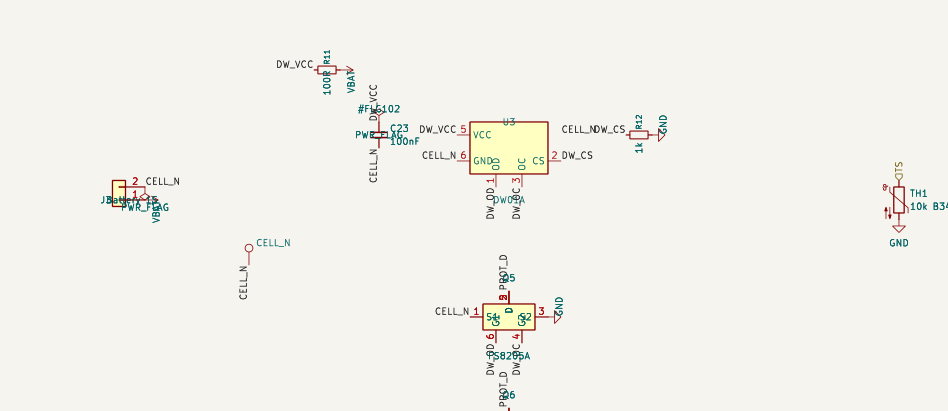</div></figure>
    <figure><figcaption>Battery after · wired, TD flagged no-connect (8)</figcaption><div class="shot">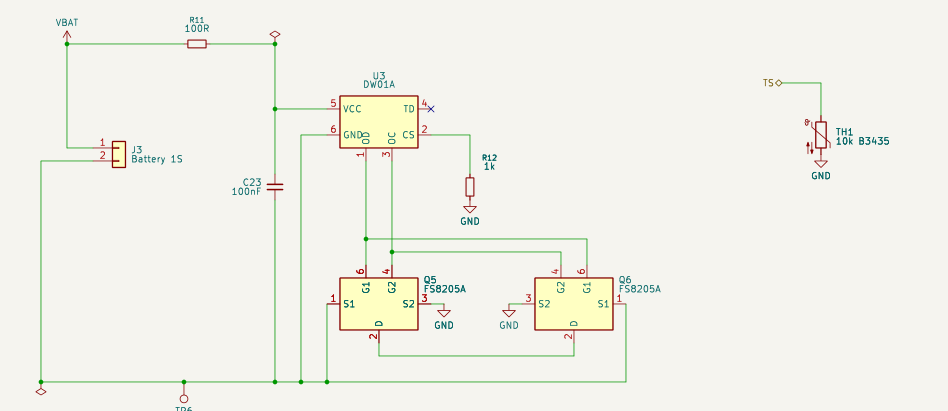
      <div class="mark" style="left:41.5%;top:21%;width:6.5%;height:10%"><span>8</span></div>
    </div></figure>
  </div>

  <div class="grid2">
    <div class="panel"><h3>Fixed on the way</h3><ul class="clean">
      <li><strong>R10 missing.</strong> The first wired plan for USB and Charger dropped the 10k pull-up from VCC_3V3 to the charger's ~INT. The netlist comparison caught it; it's back (C25744).</li>
      <li><strong>Mirrored FETs floating.</strong> KiCad rotates a symbol before mirroring it. The pin maths did it the other way round, which only shows at 90°/270°, and Q2/Q4 came out unconnected. The tools now match KiCad.</li>
      <li><strong>Text on rotated rail symbols.</strong> Field justification is relative to the symbol, so some VBUS, VSYS and VBAT names landed on their own arrows. Each is now placed explicitly and checked in KiCad's own render.</li>
      <li><strong>Radio Power.</strong> The VCC5V0_SYS feed for the HaLow front-end switch moved right of Q7, clear of C120.</li></ul></div>
    <div class="panel"><h3>Checks</h3><table><tbody>
      <tr><td>Netlist vs label version</td><td><span class="pill ok">same</span></td></tr>
      <tr><td>Intended net change</td><td>USB D+/D− flow-through on U1</td></tr>
      <tr><td>Wires crossing symbols (scripting server)</td><td><span class="pill ok">0 on all four sheets</span></td></tr>
      <tr><td>Overlaps (scripting server)</td><td>Only power symbols placed directly on a pin</td></tr>
      <tr><td>ERC</td><td>13 items, all waiting on the SoC sheet: root sheet pins, I²C drive, two I²C labels. DW01A warning gone.</td></tr>
      <tr><td>Text overlaps</td><td>Checked by eye in KiCad's SVG render, all four sheets</td></tr>
    </tbody></table></div>
  </div>
</section>

<section id="charger">
  <div class="sec-head"><span class="num">8 · USB and Charger</span><h2>Dual-input charger, wired</h2>
  <p>49 parts. The netlist matches TI's dual-input application circuit (BQ25798 Fig 10-1), and all 15 footprints exist in KiCad 10. ERC leaves only cross-sheet items, which close once the SoC sheet is drawn.</p></div>
  <div class="paperframe"><a href="sheets/usb_and_charger.svg" target="_blank" rel="noopener">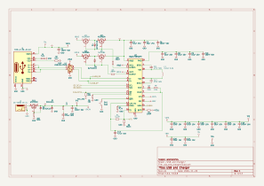</a></div>
  <p class="caption">Open the image for full size. Scroll sideways on a phone.</p>
  <div class="grid2">
    <div class="panel"><h3>USB-C input</h3><ul class="clean">
      <li>HRO TYPE-C-31-M-12, 5.1 kΩ on CC1/CC2 so it charges at 5 V as a sink.</li>
      <li>USBLC6-2SC6 on D+/D−, flow-through. After the ESD part the data lines go to the BQ25798 for BC1.2 detection and to the RV1106 for the laptop link.</li>
      <li>Q1/Q2 AO3400A back-to-back, driven by ACDRV1. Port 1 wins when both inputs appear at once.</li></ul></div>
    <div class="panel"><h3>Solar input</h3><ul class="clean">
      <li>External DC input on the board edge: a DC-005G jack (5.5 × 2.1 mm, centre positive, 24 V 2.5 A). It takes any source from 3.6 to 24 V: a solar panel of any size, a bench supply, a 12 V battery or a 24 V adapter (P-12). Firmware caps the input current at 2.4 A for the jack.</li>
      <li>Protection per TI Fig 10-1: a WST2319 P-FET against a reversed plug (about 0.3 W at 2.4 A instead of 1.8 W in a diode), an SMAJ24A surge clamp, the 2 Ω + 2.2 µF hot-plug snubber, 40 V SI2318A input FETs, and a 294 Ω resistor with a 10 V gate zener on each input FET pair.</li>
      <li>2 Ω + 2.2 µF RC snubber, which TI recommends for hot-plugged sources above 15 V.</li>
      <li>Q3/Q4 AO3400A pair on ACDRV2. MPPT is set by firmware through <code>VOC_PCT</code>.</li></ul></div>
    <div class="panel"><h3>Charger settings</h3><ul class="clean">
      <li>PROG 4.7 kΩ: 1 cell, 750 kHz, 2.2 µH inductor (Table 9-1).</li>
      <li>ILIM_HIZ tied to REGN, so the register and D+/D− detection set the input limit.</li>
      <li>TS divider 5.23k/30.1k for a 103AT NTC, which sits on the Battery sheet.</li>
      <li>No external ship FET: SDRV has 1 nF to GND. The PWR button on QON exits ship mode or resets the system.</li></ul></div>
    <div class="panel"><h3>Capacitors (pin table)</h3><ul class="clean">
      <li>VBUS 2×10 µF + 100 nF; PMID 3×10 µF + 100 nF (25 V parts).</li>
      <li>SYS 5×10 µF + 100 nF; BAT 2×10 µF; REGN 4.7 µF.</li>
      <li>BTST1/BTST2 47 nF; BATP through 100 Ω.</li></ul></div>
  </div>
</section>

<section id="powersheets">
  <div class="sec-head"><span class="num">9 · Power sheets</span><h2>Battery, Power, Radio Power and GPS</h2>
  <p>Drawn the same way as USB and Charger: every value is from its datasheet, every part has an LCSC number, and the netlist has been checked. Open any sheet for full size.</p></div>
  <div class="grid2">
    <div class="panel"><h3>Battery</h3><ul class="clean">
      <li>DW01A cuts off at 4.30 V overcharge, 2.5 V overdischarge and 150 mV overcurrent (PUOLOP datasheet p.4).</li>
      <li>Two FS8205A in parallel: about 18–32 mΩ path, overcurrent trip about 4–9 A, above the 3.3 A peak.</li>
      <li>10k B3435 NTC on TS. The terminal block is KF301-5.0, rated 17 A.</li>
      <li>TD (pin 4) is left open with a no-connect flag (Q-9).</li></ul></div>
    <div class="panel"><h3>Power</h3><ul class="clean">
      <li>TPS61089 5 V boost at 500 kHz: R<sub>FSW</sub> 316k, R<sub>ILIM</sub> 180k (5.7 A typical), divider 316k/100k (5.04 V).</li>
      <li>Compensation for a 10 kHz crossover: 8.06k + 6.8 nF, plus 22 pF (datasheet eq. 17–19). Inductor 2.2 µH, 7.5 A saturation.</li>
      <li>TLV62569 rails: 0.882 V (47k/100k), 1.344 V (124k/100k), 1.80 V (200k/100k), 3.32 V (453k/100k). VDD_ARM is fed from VDD_0V9 through 0R.</li></ul></div>
    <div class="panel"><h3>Radio Power</h3><ul class="clean">
      <li>A TLV62569 at 3.32 V for the ESP32-C5 and another for HaLow VBAT, each enabled by an RV1106 GPIO with a 100 kΩ pull-down, so both are off at boot. The GPS has its own small LDO on the GPS sheet.</li>
      <li>HaLow VDD_FEM: AO3401A switch with a 100k/10 nF soft start, driven by a 2N7002.</li></ul></div>
    <div class="panel"><h3>Cost of all twelve sheets</h3><table>
      <tbody><tr><td>USB and Charger</td><td class="n">$4.53</td></tr><tr><td>Battery (with ship FET)</td><td class="n">$0.43</td></tr><tr><td>Power</td><td class="n">$2.32</td></tr><tr><td>Radio Power</td><td class="n">$0.77</td></tr><tr><td>GPS</td><td class="n">$2.37</td></tr><tr><td>Hold-off</td><td class="n">$0.28</td></tr><tr><td>SoC (RV1106G3 $23.87)</td><td class="n">$24.16</td></tr><tr><td>SoC Power</td><td class="n">$0.34</td></tr><tr><td>microSD</td><td class="n">$0.21</td></tr><tr><td>HaLow (module $11.90, heltec.org)</td><td class="n">$12.05</td></tr><tr><td>ESP32-C5 (module $5.91)</td><td class="n">$5.94</td></tr><tr><td>Antenna</td><td class="n">$0.24</td></tr><tr><td><strong>Total</strong></td><td class="n"><strong>$53.64</strong></td></tr></tbody></table></div>
  </div>
  <h3>Battery</h3>
  <div class="paperframe"><a href="sheets/battery.svg" target="_blank" rel="noopener">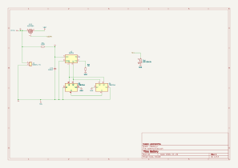</a></div>
  <h3>Power</h3>
  <div class="paperframe"><a href="sheets/power.svg" target="_blank" rel="noopener">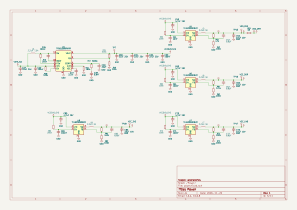</a></div>
  <h3>Radio Power</h3>
  <div class="paperframe"><a href="sheets/radio_power.svg" target="_blank" rel="noopener">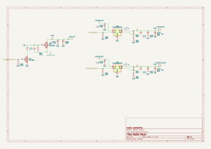</a></div>
  <h3>GPS</h3>
  <div class="grid2">
    <div class="panel"><h3>ATGM336H-5NR32-G</h3><ul class="clean">
      <li>GPS + BeiDou + GLONASS, under 26 mA at 3.3 V, 1PPS aligned to UTC. LCSC C49233943, $1.98. The ATGM336H-5N31 (C90770) is a drop-in second source.</li>
      <li>Same pad layout as a u-blox MAX module, so it uses KiCad's <code>ublox_MAX</code> footprint.</li>
      <li>The external active antenna on a U.FL is fed from the module's VCC_RF through 47 nH, with built-in 50 mA short-circuit protection.</li></ul></div>
    <div class="panel"><h3>Power</h3><ul class="clean">
      <li>ME6211 3.3 V LDO from VSYS, switched by GPS_PWR_EN with a 100k pull-down. Low-noise LDO, as the module asks (ripple under 50 mVpp).</li>
      <li>XC6206 backup LDO (1 µA) from the cell keeps the module's RTC and RAM alive, so a GPS that is switched off gets a fix in about 1 s instead of 32 s.</li>
      <li>Sheet cost $2.37. Net saving against the ESP32 and its rail: $1.84 per board.</li></ul></div>
  </div>
  <div class="paperframe"><a href="sheets/gps.svg" target="_blank" rel="noopener">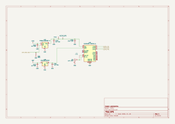</a></div>
</section>

<section id="holdoff">
  <div class="sec-head"><span class="num">9b · Hold-off</span><h2>The node waits until the battery is ready</h2>
  <p>With a flat battery, the charger powers the system as soon as any sun arrives. Without a gate, the RV1106 would boot on a weak panel, take the power the battery needs, brown out, and repeat. The hold-off keeps the whole 5 V side switched off until the battery reaches about 3.6 V, and turns it off again at about 3.3 V. That is also the low-battery cut-off the charger lacks.</p></div>
  <div class="grid2">
    <div class="panel"><h3>How the two thresholds work</h3>
      <svg viewBox="0 0 420 220" width="100%" role="img" aria-label="Battery voltage over time: the node switches on when the voltage rises through 3.6 V and stays on until it falls through 3.3 V">
        <line x1="50" y1="20" x2="50" y2="190" stroke="var(--line)"/><line x1="50" y1="190" x2="410" y2="190" stroke="var(--line)"/>
        <text x="44" y="194" text-anchor="end" font-size="10.5" fill="var(--muted)">3.0</text><text x="44" y="118" text-anchor="end" font-size="10.5" fill="var(--muted)">3.3</text><text x="44" y="68" text-anchor="end" font-size="10.5" fill="var(--muted)">3.6</text><text x="44" y="24" text-anchor="end" font-size="10.5" fill="var(--muted)">VBAT</text>
        <line x1="50" y1="114" x2="410" y2="114" stroke="var(--crit)" stroke-dasharray="5 4"/><text x="406" y="109" text-anchor="end" font-size="10.5" fill="var(--crit)">off ≤ 3.3 V</text>
        <line x1="50" y1="64" x2="410" y2="64" stroke="var(--ok)" stroke-dasharray="5 4"/><text x="406" y="59" text-anchor="end" font-size="10.5" fill="var(--ok)">on ≥ 3.6 V</text>
        <polyline points="50,185 110,150 160,64 200,52 240,80 255,74 270,96 300,92 330,114 360,140 410,120" fill="none" stroke="var(--fg)" stroke-width="2"/>
        <rect x="160" y="196" width="170" height="10" rx="2" fill="var(--mask)"/><text x="245" y="217" text-anchor="middle" font-size="10.5" fill="var(--fg)">node on</text>
        <text x="100" y="217" text-anchor="middle" font-size="10.5" fill="var(--muted)">charging, node off</text>
        <text x="262" y="40" text-anchor="middle" font-size="10" fill="var(--muted)">dips under TX stay above 3.3 V</text>
      </svg>
      <p class="caption">Illustration, not measured data. A single threshold would make the node flicker on and off as the battery sags under radio bursts. The 0.3 V gap stops that.</p></div>
    <div class="panel"><h3>Circuit</h3><ul class="clean">
      <li>An LM2903 comparator compares the battery (432k/100k divider) with 0.625 V from a TL432 reference.</li>
      <li>The second half of the comparator switches an 887k resistor while the node is off. That is what moves the turn-on point up to 3.6 V. Calculated: on 3.63 V, off 3.32 V, about ±2 %.</li>
      <li>An AO3401A P-FET switches the boost converter's input. Switching the boost's EN alone isn't enough: in shutdown, power leaks through its rectifier's body diode and the SoC regulators would still start (TPS61089 §8.3.2).</li>
      <li><strong>USB bypass (P-13):</strong> a second 2N7002 (Q12), driven from USB VBUS, turns the switch on in parallel with the comparator. Plugged into a laptop, the node comes up at once even with flat cells; the DC jack does not bypass. Unplug USB and the battery thresholds apply again.</li>
      <li>Firmware should shut down cleanly a little earlier, around 3.4 V (F-5). Cost $0.28.</li></ul></div>
  </div>
  <div class="paperframe"><a href="sheets/holdoff.svg" target="_blank" rel="noopener">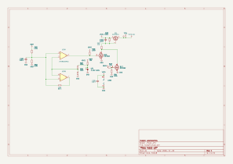</a></div>
  <div class="callout"><p><strong>Q-14 answered: yes (P-13).</strong> Q12 turns the switch on whenever USB VBUS is present, so a laptop brings up a node with flat cells.</p></div>
</section>

<section id="soc">
  <div class="sec-head"><span class="num">9c · SoC</span><h2>RV1106G3 on three sheets</h2>
  <p>The 128-pin chip is one symbol with six units, split by function so each sheet fits A4. The RK3566 was compared and rejected on cost (owner, 2026-11-20).</p></div>
  <div class="grid2">
    <div class="panel"><h3>SoC sheet</h3><ul class="clean">
      <li>24 MHz crystal (±10 ppm over temperature; the guide asks for under 20 ppm) with 18 pF, 22 Ω and 1 MΩ, as in Rockchip's reference. 32.768 kHz RTC crystal.</li>
      <li>Reset: 1 kΩ and 10 nF (Rockchip V1.3). The chip adds its own 10 ms delay after 3.3 V.</li>
      <li>USB to the laptop through 2.2 Ω. The VBUS-detect divider is 10k/15k, keeping it under 3.3 V at 5.25 V.</li>
      <li>22 Ω in series on the SD, HaLow SDIO and C5 SPI clocks. 10k I²C pull-ups to the charger.</li>
      <li>The C5 handshake lines moved off the flash-probe pins the boot ROM may drive.</li>
      <li>RECOVERY pad on SARADC_IN0. Debug UART on a 3-pin header, not fitted.</li></ul></div>
    <div class="panel"><h3>SoC Power and microSD</h3><ul class="clean">
      <li>Decoupling banks per rail, with one 100 nF per 0.9 V pin as the design guide's text asks.</li>
      <li>Filters: a ferrite bead on the OTP/TSADC 1.8 V pin, 1 Ω on the USB and MIPI 1.8 V pins, and 100 Ω + 1 µF on the RTC supply.</li>
      <li>DRAM_ZQ 240 Ω 1 %. Unused camera, Ethernet and audio pins left open; their supplies stay powered, as on every reference board.</li>
      <li>microSD card power switched by a P-FET, on by default. Card detect through 100 Ω, with a not-fitted 10k to ground as a fallback.</li>
      <li>Footprints for the QFN-128 and the $0.07 socket were generated from their drawings and are checked in T15.</li></ul></div>
  </div>
  <h3>SoC</h3>
  <div class="paperframe"><a href="sheets/soc.svg" target="_blank" rel="noopener">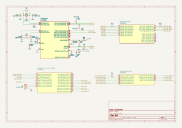</a></div>
  <h3>SoC Power</h3>
  <div class="paperframe"><a href="sheets/soc_power.svg" target="_blank" rel="noopener">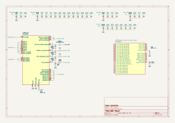</a></div>
  <h3>microSD</h3>
  <div class="paperframe"><a href="sheets/microsd.svg" target="_blank" rel="noopener">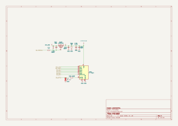</a></div>
</section>

<section id="halow">
  <div class="sec-head"><span class="num">9d · HaLow</span><h2>HT-HC01 V2 on SDIO</h2>
  <p>Wired to Heltec's own SDIO reference design. The footprint is converted from Heltec's Altium library, not redrawn. LCSC doesn't stock the module; it comes from heltec.org at $11.90.</p></div>
  <div class="grid2">
    <div class="panel"><h3>Circuit</h3><ul class="clean">
      <li>10k pull-ups on the SDIO clock, command and data lines, to the module's own switched 3.3 V. When the module is off, the pull-ups can't feed power into it.</li>
      <li>JTAG and unused GPIO pins tied to ground through four 4 × 10k resistor arrays, as Heltec requires. BUSY has a 10k pull-down.</li>
      <li>10 µF + 100 nF on each supply pin. VDD_IO and VBAT share one rail, since VDD_IO must never exceed VBAT.</li>
      <li>The antenna pin goes to the Antenna sheet for the DC block, matching and harmonic filter (next).</li></ul></div>
    <div class="panel"><h3>Checks</h3><ul class="clean">
      <li>Pin names match both the datasheet table and Heltec's symbol library. The two large bottom pads are ground.</li>
      <li>Netlist: SDIO, reset, wake and busy reach the RV1106 pins in the pin map, and every pull-up/pull-down lands where planned.</li>
      <li>Heltec rates the front-end at up to 400 mA from 5 V when transmitting at 27 dBm (datasheet p.12), to be measured on the first board.</li></ul></div>
  </div>
  <div class="paperframe"><a href="sheets/halow.svg" target="_blank" rel="noopener">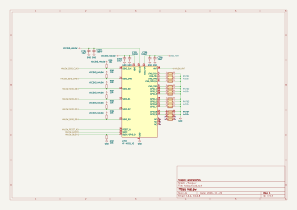</a></div>
</section>

<section id="c5">
  <div class="sec-head"><span class="num">9e · ESP32-C5</span><h2>The 2.4 GHz radio on SPI</h2>
  <p>ESP32-C5-WROOM-1U-N16R8, the cheapest in-stock variant at LCSC ($5.91). Its antenna is the module's own U.FL connector. The footprint is Espressif's official KiCad footprint.</p></div>
  <div class="grid2">
    <div class="panel"><h3>Link to the RV1106</h3><ul class="clean">
      <li>SPI on the C5's fast IO_MUX pins (IO6 clock, IO7 MOSI, IO2 MISO, IO10 CS), with 22 Ω on the clock at the SoC.</li>
      <li>Handshake on IO23 and data-ready on IO24, both pins with no boot role.</li>
      <li>UART0 to the RV1106 for the console and for reflashing with esptool.</li></ul></div>
    <div class="panel"><h3>Reset and boot</h3><ul class="clean">
      <li>EN gets Espressif's recommended 10k + 1 µF delay. The RV1106 pulls it low to reset the C5.</li>
      <li>IO28 has a 10k pull-up, so the C5 boots from flash. To reflash, Linux holds IO28 low and pulses EN (datasheet p.18).</li>
      <li>22 µF + 100 nF on the module supply, as in Espressif's reference circuit.</li></ul></div>
  </div>
  <div class="paperframe"><a href="sheets/esp32c5.svg" target="_blank" rel="noopener">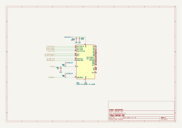</a></div>
</section>

<section id="antenna">
  <div class="sec-head"><span class="num">9f · Antenna</span><h2>A filter on the HaLow output</h2>
  <p>The HaLow transmitter runs at 27 dBm, and its third harmonic lands near 2.75 GHz, close to the 2.4 GHz band. A 5-pole low-pass filter sits between the module and its U.FL connector.</p></div>
  <div class="grid2">
    <div class="panel"><h3>Design</h3><ul class="clean">
      <li>100 pF DC block, as in Heltec's reference, then 2.7 pF, 8.2 nH, 5.6 pF, 8.2 nH and 2.7 pF.</li>
      <li>Murata wire-wound inductors, chosen because their self-resonance (at least 5.5 GHz) stays well above the harmonic. The cheaper multilayer ones resonate near 3.2 GHz and lost twice as much.</li>
      <li>The ESP32-C5 uses its own U.FL, and the GPS has one on its sheet.</li></ul></div>
    <div class="panel"><h3>Simulated, at the inductor's datasheet limits</h3><ul class="clean">
      <li>Loss at 915 MHz: 0.3 to 0.6 dB. The integrated LTCC filter on LCSC loses up to 0.9 dB.</li>
      <li>Second harmonic −20 dB, third harmonic −44 dB.</li>
      <li>A starting point: measure and tune on the first board. The shunt pads double as the antenna match.</li></ul></div>
  </div>
  <div class="paperframe"><a href="sheets/antenna.svg" target="_blank" rel="noopener">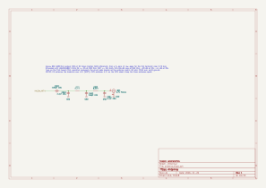</a></div>
</section>

<section id="cold">
  <div class="sec-head"><span class="num">9g · Charger defaults</span><h2>What the charger does with no firmware</h2>
  <p>Checked against the June 2026 revision of the BQ25798 datasheet (Rev C), which fixes two things that mattered here.</p></div>
  <div class="grid2">
    <div class="panel"><h3>Settled</h3><ul class="clean">
      <li><strong>Input over-voltage limit at power-up is 26 V</strong>, not 7 V. The old datasheet contradicted itself; Rev C corrects the table, and TI said the same on its forum. Any 3.6–24 V source starts a flat node.</li>
      <li><strong>Charge timers can't stop a cold start for good.</strong> A long-flat battery bank may hit the 2 h pre-charge limit, but the charger restarts each dawn and the bank reaches 3.0 V within a day or two. After the node boots, firmware takes over the timers.</li></ul></div>
    <div class="panel"><h3>Ship FET added</h3><ul class="clean">
      <li>Rev C clarifies that ship mode switches an <strong>external</strong> FET, which the board didn't have. Without it, the power-off, storage mode and PWR button would do nothing.</li>
      <li>Q13 (AO3400A) now sits between the cell and the rest of the board, driven by the charger, exactly as TI draws it. A flat cell still charges through its body diode.</li>
      <li>Firmware power-off is ship mode. Sun, USB, the DC jack or the PWR button wake the node again.</li></ul></div>
  </div>
  <h3>Battery sheet</h3>
  <div class="paperframe"><a href="sheets/battery.svg" target="_blank" rel="noopener"></a></div>
</section>

<section id="placement">
  <div class="sec-head"><span class="num">10 · PCB, Rev 1</span><h2>Routed 475 of 499 connections; 24 left for you in KiCad</h2>
  <p>90 × 80 mm, four layers, every part on the top side (Q-4). The cells are off-board on wires through J3 (Q-5), and the battery thermistor goes on the pack through J4 (T27). The board passes DRC with no clearance, short or hole errors and matches the schematic exactly. 24 connections still need a small hand edit each; <a href="../t26-worklist/index.html">the routing worklist</a> shows every one with a board crop and a hint.</p></div>
  <div class="grid2">
    <div class="panel"><h3>Where routing stands</h3>
      <table><tr><th>Item</th><th>Status</th></tr>
      <tr><td>Connections</td><td class="n">475 / 499 routed</td></tr>
      <tr><td>Clearance, short, hole errors</td><td class="n">0</td></tr>
      <tr><td>Schematic mismatches</td><td class="n">0</td></tr>
      <tr><td>Dangling vias / tracks</td><td class="n">14 / 5, swept at the end</td></tr>
      <tr><td>Quality pass</td><td>after your 24: USB pair, SD/SDIO length match, wider power paths, silkscreen</td></tr></table></div>
    <div class="panel"><h3>Board build</h3>
      <table><tr><th>Item</th><th>Choice</th></tr>
      <tr><td>Stack-up</td><td>JLC04161H-3313, 1.6 mm, ENIG</td></tr>
      <tr><td>Layers</td><td>Top signals · solid GND · signals + 5 V / 0.9 V copper · bottom signals</td></tr>
      <tr><td>Default track / via</td><td class="n">0.12 mm · 0.4/0.2 mm</td></tr>
      <tr><td>SoC supplies</td><td class="n">0.2 mm (fits the 0.35 mm pins)</td></tr>
      <tr><td>50 Ω RF · 90 Ω USB</td><td class="n">0.17 mm · 0.155/0.127 mm</td></tr></table>
      <p class="muted" style="margin-top:.6rem">All within JLCPCB’s standard 4-layer limits. Trace impedances are calculated estimates (±10 %); JLC confirms them when ordered with impedance control.</p></div>
  </div>
  <h3>Routed board</h3>
  <div class="paperframe"></div>
  <p class="muted">Red: top layer. Orange: inner signal layer (In2). Blue: bottom layer. Copper fills are hidden so the tracks show, and the solid ground layer isn’t drawn.</p>
  <h3>3D view</h3>
  <div class="grid2">
    <figure class="paperframe" style="margin:0">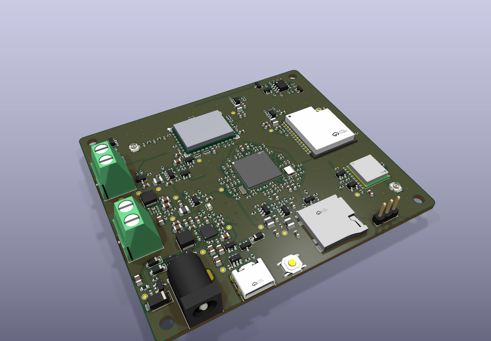</figure>
    <figure class="paperframe" style="margin:0">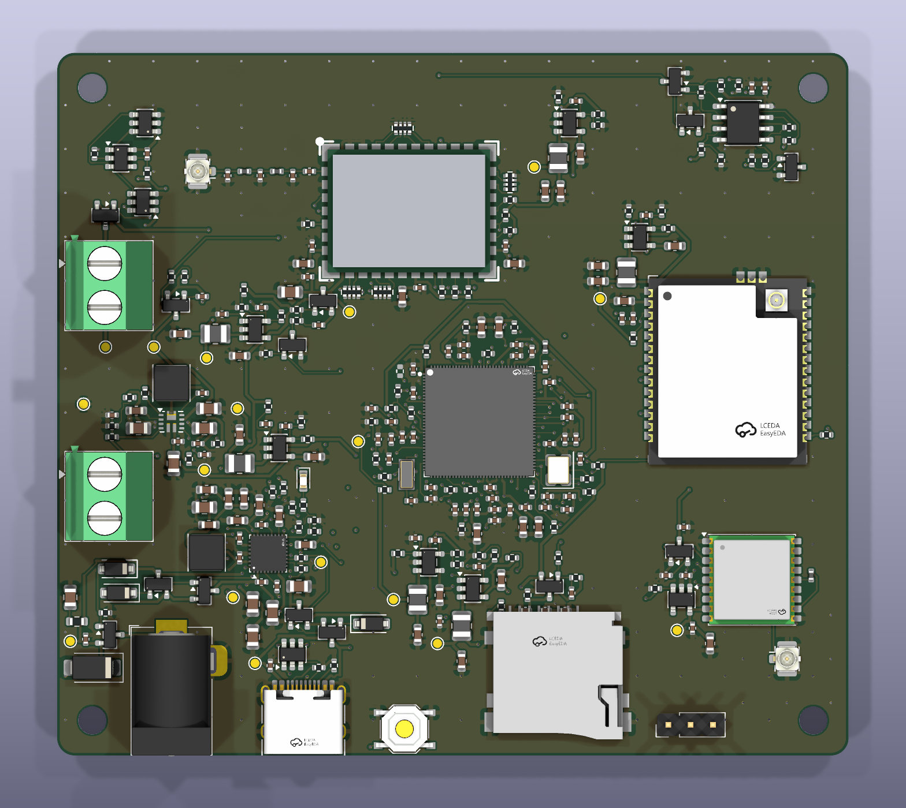</figure>
  </div>
  <p class="muted">Rendered by KiCad 10 from the current board (2026-11-21). Reference designators are hidden on the silkscreen (they stay on the fab layer for assembly drawings). The processor, ESP32-C5 module, GPS module, charger, USB-C, microSD socket and PWR button use the manufacturer models LCSC publishes through EasyEDA, fetched with easyeda2kicad and aligned to our footprints pin 1 to pin 1 (pad fit within 0.12 mm). Two EasyEDA models came with their own offset wrong and were corrected by measuring the render: the ESP32-C5 module (shield now 1.1 mm from the U.FL end of the 21.2 mm module, per Espressif’s drawing) and the USB-C connector (shell now on the footprint’s body outline, not over the pad row). Those models carry a small EasyEDA logo. The HaLow module isn’t sold on LCSC, so it’s still a plain box at its datasheet size (18.5 × 14 × 2.6 mm).</p>
  <h3>Placement after the rework</h3>
  <div class="paperframe" style="position:relative">
    <div style="position:relative;min-width:720px">
      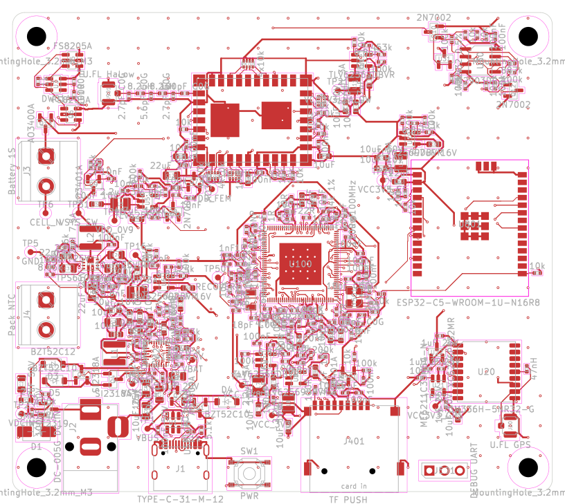
      <svg viewBox="98 98 94 84" preserveAspectRatio="none" style="position:absolute;inset:0;width:100%;height:100%" aria-hidden="true">
        <style>rect{fill:none;stroke:var(--copper);stroke-width:.35;stroke-dasharray:1.2 .8} text{font:2.2px var(--f-mono);fill:var(--copper)}</style>
        <g><rect x="100.5" y="147" width="38" height="33" rx="1"/><text x="101.3" y="150">Charger + inputs</text></g><g><rect x="104" y="126" width="30" height="24" rx="1"/><text x="104.8" y="129">Boost + 0.9 V / DDR bucks</text></g><g><rect x="100.5" y="101" width="19" height="20" rx="1"/><text x="101.3" y="104">Battery protection</text></g><g><rect x="167" y="100.5" width="21" height="16" rx="1"/><text x="167.8" y="103.5">Hold-off</text></g><g><rect x="114" y="102.5" width="40" height="29" rx="1"/><text x="114.8" y="105.5">HaLow + LPF</text></g><g><rect x="133" y="129" width="29" height="27" rx="1"/><text x="133.8" y="132">SoC</text></g><g><rect x="136" y="153" width="16" height="17" rx="1"/><text x="136.8" y="156">1.8 V / 3.3 V bucks</text></g><g><rect x="152" y="155" width="16" height="25" rx="1"/><text x="152.8" y="158">microSD</text></g><g><rect x="160" y="116" width="29" height="33" rx="1"/><text x="160.8" y="119">ESP32-C5 + rail</text></g><g><rect x="166" y="152" width="23" height="21" rx="1"/><text x="166.8" y="155">GPS</text></g>
      </svg>
    </div>
  </div>
  <div class="grid2">
    <div class="panel"><h3>What changed to make it routable</h3><ul class="clean">
      <li><strong>Escape lanes at the SoC:</strong> capacitors no longer ring the processor. Each signal group (SD, USB, SDIO, SPI, I²C, UART) has a clear 2.5 mm strip to fan out through.</li>
      <li><strong>Blocks moved into empty space:</strong> the hold-off comparator went to the top-right corner, battery protection next to J3, and two of the four SoC bucks below the SoC.</li>
      <li><strong>Second inner layer opened for tracks:</strong> In1 stays solid ground under everything. In2 now carries signals plus the 5 V and 0.9 V copper.</li>
      <li><strong>Finer rules where the pins are fine:</strong> the SoC’s 0.35 mm pins need 0.2 mm supply tracks; the old 0.3 mm power rule couldn’t reach them.</li></ul></div>
    <div class="panel"><h3>How it was routed</h3><ul class="clean">
      <li><strong>Freerouting 2.5.0</strong> (open-source autorouter) for the bulk, run offline in a container: by default it sends usage data to its servers.</li>
      <li><strong>Two small tools of mine</strong> for what it left: one drops ground vias where a pad or fill piece has no path to the ground plane, and one routes single connections around existing copper. KiCad’s DRC checks every result before it’s kept.</li>
      <li><strong>Your 24</strong> are boxed-in spots: one blocking via, or a pad only a person can see a way out of. They’re quick with KiCad’s push-and-shove router.</li></ul></div>
  </div>
</section>

<section id="bom">
  <div class="sec-head"><span class="num">10 · Cost so far</span><h2>USB and Charger: $4.35 per board</h2>
  <p>LCSC quantity-1 prices from the 2026-11-19 catalog snapshot. The BQ25798 is two thirds of it. Basic parts carry no JLCPCB setup fee; each Extended part adds one fee per order.</p></div>
  <div class="panel scroll"><table>
    <thead><tr><th>Part</th><th>LCSC</th><th>Refs</th><th>Type</th><th class="n">Qty</th><th class="n">Unit $</th><th class="n">Line $</th></tr></thead>
    <tbody id="bomrows"></tbody>
  </table></div>
  <div class="panel scroll">
    <h3>Major parts still to place</h3>
    <table><thead><tr><th>Part</th><th>LCSC</th><th class="n">Stock</th><th class="n">Unit $</th></tr></thead><tbody>
      <tr><td>RV1106G3 (256 MB)</td><td class="mono">C5328706</td><td class="n">1,933</td><td class="n">23.87</td></tr>
      <tr><td>RV1106G2 (128 MB), alternative</td><td class="mono">C5272606</td><td class="n">582</td><td class="n">13.68</td></tr>
      <tr><td>ESP32-C5-WROOM-1U-N8R8</td><td class="mono">C54951858</td><td class="n">473</td><td class="n">5.58</td></tr>
      
            <tr><td>Heltec HT-HC01 V2</td><td>Heltec (not on LCSC)</td><td class="n">—</td><td class="n">—</td></tr>
    </tbody></table>
  </div>
</section>

<section id="open">
  <div class="sec-head"><span class="num">11 · Open questions</span><h2>Waiting on decisions</h2></div>
  <div class="panel scroll"><table>
    <thead><tr><th>ID</th><th>Question</th><th>Why it matters</th></tr></thead><tbody>
      <tr><td class="mono">—</td><td>RV1106G3 or G2?</td><td>About $10 per board. 128 MB is enough for Linux and batman-adv.</td></tr>
      <tr><td class="mono">Q-4</td><td>Board size and enclosure, outdoor rating</td><td>Antenna spacing, connector choice, cell holders.</td></tr>
      <tr><td class="mono">Q-5</td><td>Number of cells (panel: handheld, decided)</td><td>Depends on Q-13.</td></tr>
      <tr><td class="mono">Q-6</td><td>External antennas and enclosure connectors</td><td>HaLow, the ESP32-C5 and the GPS each use a U.FL to an external antenna.</td></tr>
      <tr><td class="mono">Q-7</td><td>Deployment region</td><td>HaLow 902–928 MHz at 27 dBm must be legal there.</td></tr>
      <tr><td class="mono">Q-9</td><td>DW01A TD pin: leave floating or tie to GND?</td><td>Floating today; the datasheet shows no connection.</td></tr>
      <tr><td class="mono">Q-12</td><td>Keep the ESP32-C5 or use a cheaper 2.4 GHz module (ESP32-C6-MINI-1U)?</td><td>About $1.24 per board; ESP-NOW on the C6 to confirm.</td></tr>
      <tr><td class="mono">Q-14</td><td>Should USB power bypass the hold-off?</td><td>Otherwise a flat node on a laptop waits until the cell reaches 3.6 V.</td></tr>
      <tr><td class="mono">Q-13</td><td>A node that sleeps most of the time, or a bigger panel?</td><td>A handheld panel sustains about 0.16–0.4 W against 1.8 W always on.</td></tr>
      <tr><td class="mono">Q-8</td><td>Phone hotspot on the ESP32-C5</td><td>Shares the C5's one radio and channel with the 2.4 GHz mesh link.</td></tr>
      <tr><td class="mono">Q-9</td><td>DW01A TD pin: leave floating or tie to GND?</td><td>It is a "test pin for reduce delay time" (datasheet p.2); the app circuit shows no connection. Currently floating.</td></tr>
    </tbody></table></div>
</section>
</main>

<script>
(function(){
  // Power-up timing diagram, drawn to one time scale (0–18 ms).
  var svg=document.querySelector('#sequence svg'), NS='http://www.w3.org/2000/svg';
  var x0=150,x1=740,tmax=18, X=function(t){return x0+(x1-x0)*t/tmax};
  function el(n,a,txt){var e=document.createElementNS(NS,n);for(var k in a)e.setAttribute(k,a[k]);if(txt)e.textContent=txt;svg.appendChild(e);return e}
  for(var t=0;t<=tmax;t+=2){el('line',{x1:X(t),x2:X(t),y1:20,y2:210,stroke:'var(--line)','stroke-dasharray':'2 4'});el('text',{x:X(t),y:226,'text-anchor':'middle','font-size':11,fill:'var(--muted)'},t+' ms')}
  var rows=[
    {n:'VCC5V0_SYS',on:0,ramp:0,col:'var(--muted)'},
    {n:'VDD_0V9 / VDD_ARM',on:0.27,ramp:0.8,col:'var(--mask)'},
    {n:'VCC_1V8 / VCC_DDR',on:2.74,ramp:0.8,col:'var(--mask)'},
    {n:'VCC_3V3',on:5.49,ramp:0.8,col:'var(--mask)'},
    {n:'nPOR (internal)',on:16.3,ramp:0.05,col:'var(--copper)'}];
  rows.forEach(function(r,i){
    var yb=48+i*34, yt=yb-18;
    el('text',{x:x0-10,y:yb-4,'text-anchor':'end','font-size':12,fill:'var(--fg)'},r.n);
    var a=X(r.on),b=X(r.on+r.ramp);
    el('polyline',{points:x0+','+yb+' '+a+','+yb+' '+b+','+yt+' '+x1+','+yt,fill:'none',stroke:r.col,'stroke-width':2});
    if(i>0&&i<4){el('text',{x:b+6,y:yt-4,'font-size':10.5,fill:r.col},(r.on+r.ramp).toFixed(1)+' ms')}
  });
  [[1.07,3.54],[3.54,6.29]].forEach(function(g,i){var y=200-i*0;var a=X(g[0]),b=X(g[1]);
    el('line',{x1:a,x2:b,y1:196-i*12,y2:196-i*12,stroke:'var(--copper)','stroke-width':1.5});
    el('text',{x:(a+b)/2,y:192-i*12,'text-anchor':'middle','font-size':10.5,fill:'var(--copper)'},(g[1]-g[0]).toFixed(1)+' ms gap, needs ≥ 1 ms')});

  // Average power bars, one linear scale 0–0.8 W.
  var b=document.getElementById('bars'), data=[['RV1106 SoC (est.)',0.47],['ESP32-C5 RX',0.35],['HaLow listen',0.23],['GPS tracking',0.13]];
  var bx0=130,bx1=400,max=0.8,S=function(v){return bx0+(bx1-bx0)*v/max};
  function be(n,a,txt){var e=document.createElementNS(NS,n);for(var k in a)e.setAttribute(k,a[k]);if(txt)e.textContent=txt;b.appendChild(e);return e}
  [0,0.2,0.4,0.6,0.8].forEach(function(v){be('line',{x1:S(v),x2:S(v),y1:10,y2:190,stroke:'var(--line)'});be('text',{x:S(v),y:205,'text-anchor':'middle','font-size':10.5,fill:'var(--muted)'},v.toFixed(1)+' W')});
  data.forEach(function(d,i){var y=18+i*34;
    be('text',{x:bx0-8,y:y+15,'text-anchor':'end','font-size':11.5,fill:'var(--fg)'},d[0]);
    be('rect',{x:bx0,y:y,width:S(d[1])-bx0,height:22,rx:2,fill:i==0?'var(--copper)':'var(--mask)'});
    be('text',{x:S(d[1])+6,y:y+15,'font-size':11,fill:'var(--fg)'},d[1].toFixed(2)+' W')});
  be('text',{x:bx0,y:224,'font-size':11,fill:'var(--muted)'},'Total from battery ≈ 1.19 W, conversion losses included');

  var pins=[["SD card", "15", "GPIO3_A4", "SDMMC_CLK", "SD_CLK", "CLK", "22 \u03a9 series (Rockchip guide Table 2-7)"], ["SD card", "16", "GPIO3_A5", "SDMMC_CMD", "SD_CMD", "CMD", ""], ["SD card", "14", "GPIO3_A3", "SDMMC_D0", "SD_D0", "DAT0", ""], ["SD card", "12", "GPIO3_A2", "SDMMC_D1", "SD_D1", "DAT1", ""], ["SD card", "18", "GPIO3_A7", "SDMMC_D2", "SD_D2", "DAT2", ""], ["SD card", "17", "GPIO3_A6", "SDMMC_D3", "SD_D3", "CD/DAT3", ""], ["SD card", "11", "GPIO3_A1", "SDMMC_DET", "SD_DET", "card-detect switch", "Low = card inserted, selects SDMMC over JTAG/UART (guide \u00a72.1.4)"], ["HaLow", "111", "GPIO2_A2", "SDIO_CLK_M0", "HALOW_SDIO_CLK", "PAD_18 MM_SDIO_CLK", "22 \u03a9 series (guide Table 2-8)"], ["HaLow", "112", "GPIO2_A3", "SDIO_CMD_M0", "HALOW_SDIO_CMD", "PAD_21 MM_SDIO_CMD", "10k\u2013100k pull-up (Heltec pin notes)"], ["HaLow", "110", "GPIO2_A1", "SDIO_D0_M0", "HALOW_SDIO_D0", "PAD_17 MM_SDIO_D0", "pull-up"], ["HaLow", "109", "GPIO2_A0", "SDIO_D1_M0", "HALOW_SDIO_D1", "PAD_16 MM_SDIO_D1", "pull-up"], ["HaLow", "114", "GPIO2_A5", "SDIO_D2_M0", "HALOW_SDIO_D2", "PAD_23 MM_SDIO_D2", "pull-up"], ["HaLow", "113", "GPIO2_A4", "SDIO_D3_M0", "HALOW_SDIO_D3", "PAD_22 MM_SDIO_D3", "pull-up"], ["HaLow", "107", "GPIO2_A6", "GPIO out", "HALOW_RESET_N", "PAD_35 RESET_N", "active low"], ["HaLow", "106", "GPIO2_A7", "GPIO out", "HALOW_WAKE", "PAD_36 WAKE", ""], ["HaLow", "105", "GPIO2_B0", "GPIO in", "HALOW_BUSY", "PAD_34 MM_GPIO_0 (BUSY)", "needed for power save"], ["HaLow", "104", "GPIO2_B1", "GPIO out", "HALOW_PWR_EN", "TLV62569 EN (VBAT + VDD_IO)", "default pull-down keeps HaLow off at boot"], ["HaLow", "72", "GPIO1_A0", "GPIO out", "HALOW_FEM_EN", "VDD_FEM P-FET switch", "5 V front-end"], ["ESP32-C5", "38", "GPIO4_A7", "SPI1_CLK_M0", "C5_SPI_CLK", "IO6 FSPICLK", "22 \u03a9 series at the SoC"], ["ESP32-C5", "45", "GPIO4_A1", "SPI1_MOSI_M0", "C5_SPI_MOSI", "IO7 FSPID", ""], ["ESP32-C5", "46", "GPIO4_A0", "SPI1_MISO_M0", "C5_SPI_MISO", "IO2 FSPIQ", ""], ["ESP32-C5", "40", "GPIO4_A5", "SPI1_CS0_M0", "C5_SPI_CS", "IO10 FSPICS0", ""], ["ESP32-C5", "90", "GPIO1_C5", "GPIO in", "C5_HANDSHAKE", "IO23", "moved off the flash-probe pins"], ["ESP32-C5", "83", "GPIO1_C6", "GPIO in", "C5_DATA_READY", "IO24", "moved off the flash-probe pins"], ["ESP32-C5", "85", "GPIO1_D3", "UART5_TX_M1", "C5_UART_RX", "RXD0", "console + esptool"], ["ESP32-C5", "86", "GPIO1_D2", "UART5_RX_M1", "C5_UART_TX", "TXD0", ""], ["ESP32-C5", "74", "GPIO1_A2", "GPIO out (open drain)", "C5_EN", "EN (CHIP_PU)", "10k pull-up + 1 \u00b5F"], ["ESP32-C5", "77", "GPIO1_B0", "GPIO out (open drain)", "C5_BOOT", "IO28", "10k pull-up; low at reset = download mode (datasheet p.18)"], ["ESP32-C5", "75", "GPIO1_A3", "GPIO out", "C5_PWR_EN", "TLV62569 EN", ""], ["GPS", "87", "GPIO1_D1", "UART3_RX_M1", "GPS_TXD", "TXD0 (pin 2)", "VCCIO6 = 3.3 V, as drawn"], ["GPS", "89", "GPIO1_D0", "UART3_TX_M1", "GPS_RXD", "RXD0 (pin 3)", ""], ["GPS", "91", "GPIO1_C4", "GPIO in", "GPS_PPS", "1PPS (pin 4)", "rising edge aligned to UTC (manual p.4)"], ["GPS", "73", "GPIO1_A1", "GPIO out", "GPS_PWR_EN", "ME6211 CE", "100k pull-down, GPS off at boot"]];
  var pr=document.getElementById('pinrows');
  pins.forEach(function(r){var tr=document.createElement('tr');r.forEach(function(v,i){var td=document.createElement('td');td.textContent=v;if(i==1)td.className='n';if(i==2||i==4)td.className='mono';tr.appendChild(td)});pr.appendChild(tr)});

  // Sheet status cards.
  var sheets=[['SoC','RV1106G3 signals: 24 MHz and 32.768 kHz crystals, reset, USB, charger I2C, SD, HaLow SDIO, C5 SPI/UART, GPS, debug UART','ok'],['SoC Power','RV1106G3 supply pins, decoupling banks, filtered analog rails, unused camera/Ethernet/audio pins','ok'],['microSD','Boot card on SDMMC0, switched card power, card detect','ok'],['USB and Charger','USB-C, solar input, BQ25798 dual-input charger','ok'],['Battery','DW01A + 2× FS8205A, cell connector, NTC','ok'],['Power','TPS61089 5 V boost, four TLV62569 SoC rails, RC sequencing','ok'],['Radio Power','TLV62569 rails with enables for the C5 and HaLow, VDD_FEM switch','ok'],['HaLow','HT-HC01 V2 on SDIO with pull-ups, RESET/WAKE/BUSY, JTAG and GPIO pull-down arrays, local decoupling','ok'],['GPS','ATGM336H, ME6211 switched LDO, XC6206 backup LDO, U.FL active antenna','ok'],['Hold-off','Battery comparator with hysteresis switching the 5 V boost input','ok'],['ESP32-C5','C5-WROOM-1U-N16R8: SPI slave on the fast pins, handshake and data-ready, UART, EN and boot strap driven by the RV1106','ok'],['Antenna','HaLow DC block, 5-pole low-pass for the 3rd harmonic, U.FL','ok']];
  var g=document.getElementById('sheetgrid');
  sheets.forEach(function(s){var c=document.createElement('div');c.className='sheetcard';
    c.innerHTML='<div class="row"><h3></h3><span class="pill '+s[2]+'">'+(s[2]=='ok'?'drawn':'to draw')+'</span></div><p></p>';
    c.querySelector('h3').textContent=s[0];c.querySelector('p').textContent=s[1];g.appendChild(c)});

  // BOM rows for the USB and Charger sheet.
  var bom=[['BQ25798RQMR','C2876593','U2','Extended',1,2.9144],['AO3400A','C20917','Q1, Q2','Basic',2,0.0895],['SI2318A 40 V','C2681218','Q3, Q4','Extended',2,0.0491],['10uF 25V 0805','C15850','C4,C5,C7–C9','Basic',5,0.0692],['10uF 10V 0603','C19702','C14–C18,C20,C21','Basic',7,0.0297],['TYPE-C-31-M-12','C165948','J1','Extended',1,0.1872],['2.2uF 50V 0805','C377773','C2','Basic',1,0.0555],['FNR4030S2R2MT 2.2uH','C167869','L1','Extended',1,0.0533],['USBLC6-2SC6','C2827654','U1','Extended',1,0.045],['100nF 50V 0402','C307331','C1,C3,C6,C10','Basic',4,0.0099],['SS34','C8678','D1','Basic',1,0.0351],['4.7uF 16V 0603','C19666','C13','Basic',1,0.0297],['TS-1187A button','C318884','SW1','Basic',1,0.0207],['Other passives, LED, DC-005G jack, input protection','various','R1–R10,C11,C12,C19,C22,D2,J2','mixed',16,null]];
  var other=4.533, tb=document.getElementById('bomrows');
  bom.forEach(function(r){var line=r[5]==null?null:r[4]*r[5]; if(line!=null) other-=line;});
  bom.forEach(function(r){var tr=document.createElement('tr');var line=r[5]==null?other:r[4]*r[5];
    [r[0],r[1],r[2],r[3]].forEach(function(v,i){var td=document.createElement('td');td.textContent=v;if(i==1)td.className='mono';tr.appendChild(td)});
    [r[4],r[5]==null?'—':r[5].toFixed(4),line.toFixed(3)].forEach(function(v){var td=document.createElement('td');td.className='n';td.textContent=v;tr.appendChild(td)});
    tb.appendChild(tr)});
  var tr=document.createElement('tr');tr.innerHTML='<td><strong>Total</strong></td><td></td><td></td><td></td><td class="n"></td><td class="n"></td><td class="n"><strong>4.533</strong></td>';tb.appendChild(tr);
})();
</script>
